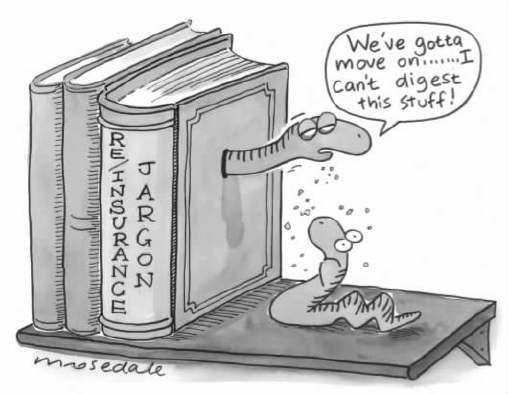

无论是足球还是园艺，再到烹饪、登山以及人类遗传学，任何一个领域都有其专门术语。哲学领域当然也有术语，不过幸运的是大部分哲学术语根本不像看起来那么可怕。第四章中出现了“形而上学”，意指对事实的根本特征的研究（或看法）。第五章中出现了“后果主义”，凡是根据事情导致的后果，而不是根据事情的本质或发展历史来判断其价值的所有理论都可称为“后果主义”。第五章中还出现了“认识论”一词。认识论是关于知识、信仰以及其他密切相关的概念——如原因和解释的一个哲学研究分支。接下来我们再看一些术语，这些术语都是以“主义”结尾的。这样做不是临时抱佛脚，死背术语，而是想通过学习更多的术语使读者对哲学有更深的了解。
大部分以“主义”结尾的哲学词汇（如“后果主义”）都是涵盖很广的词，指代某种普遍的学说。涵盖广则用法灵活，这就保证了这些词能够不断出现，但这同时也会带来危害。最主要的危害就是人们会滥用这些词。不要以为你能说出某个哲学家代表什么“主义”，就能将这个哲学家划入某个派别。乔治·贝克莱 [1] （1685—1752）的哲学思想是一种唯心主义的思想，黑格尔（1770—1831）的思想也是，但我从未听说过读其中一个人的作品会有助于理解另一个人的作品——两人的观点相去甚远。而与此同时，卡尔·马克思（1818—1883）肯定不是一个唯心主义者（唯心主义这个词在马克思主义语汇中实际上用得过于泛滥了），但是马克思的思想在许多方面都非常接近黑格尔。学生在读马克思的作品之前得懂一点黑格尔，这个建议似乎是你能想到的建议中最明白不过的一个了。
让诸君了解涵盖很广的词带来的危害并举例说明之后，接下来就让我们从二元论 [2] 开始吧。二元论可以指所有承认有两种（完全）相对的力量或实体存在的观点，因此假设存在两种互相冲突的基本力量（一种代表正义，一种代表邪恶）的神学也被认为是一种二元论。不过二元论最根本的意义在于认为现实是由两种完全不同的东西，即精神和物质组成的，而人类则是两种东西都包含一些。从这个意义来看，二元论最有名的支持者大概是法国哲学家勒内·笛卡尔（下一章我们将谈到他的一些著作）。实际上，一些反对二元论的人（现在反对二元论的人很多）似乎想把一切责任都推到笛卡尔身上。（至少可以说，根据哲学发展史这种说法是站不住脚的——笛卡尔只是努力想找到足够的证据来证明一种非常 古老的学说。）
二元论当然有其自身的问题，尤其是在将二元论与现代科学理论相结合的时候。一个棘手的问题是：二元论者所谓的精神的东西实际上做了些什么？一般认为我们的思想、我们的感觉、我们的知觉会影响我们的行为。如果我心想 火车十分钟后出发，而我想要 赶上火车，在看见 一块写着“火车站”字样的指示牌时，我会朝我确信 是指示牌指示的方向行进。这就意味着我的身体（物质的东西）朝某个地方移动，而这个地方在其他情况下我的身体是不可能去的。但是难道科学理论不认为所有物质事件的发生都是由其他物质事件引起的吗？如果确实如此，那么怎么还可能存在能导致我们身体移动的其他 非物质的东西呢？二元论者大概只能咬紧牙关地说关于这一点，科学理论完全错了。因为如果他们同意在这一点上科学理论是正确的，如果他们承认（如果不承认就让人觉得奇怪了）我们所想、所感觉等等会影响我们的行为，那么得到的结论便是思考、感觉、感知等一定是物质 过程。在这种情况下会再次出现同一个问题：他们所说的这种非物质的东西，即“精神”，到底做了什么？但是二元论者也不能仅仅就说 科学在声称所有物质事件的发生都由其他物质事件引起这点上是错误的，因为这样做首先不能说服那些心存疑惑的人。他们会需要一定的理由来证明人身上有一些东西不可能是物质的。说到笛卡尔，就前面提到的这个问题，我们会从他身上发现一些二元论者可能持有的观点。
由此，你可能会想，如果说二元论就是认为存在精神和物质两种完全不同的东西，那么我们也许还能发现一种学说，认为只存在物质；或是发现另一种学说，认为除了精神之外别无他物。你说得完全正确。前者就是所谓的唯物主义 ，而后者被称为唯心主义 （不是心灵主义），两种学说都有悠久的历史。
有明确文字记载的最早的唯物主义是古印度的物质主义，人们通常以当时最有声望的思想家之一加尔瓦卡 [3] （顺便提一下，梵语中“c”读“ch”的音）称呼这种思想。如果你发现自己不小心犯了一个常见的错误，以为所有的印度哲学都是神秘主义的、都与宗教有关并且提倡禁欲，那么就记住古印度还有物质主义的思想。他们认为只有感知才能传递知识，无法感知的东西是不存在的。婆罗门教徒所认为的世世相传的永恒的灵魂是不存在的。人有一生，而且只有一生，要努力享受这一生。这种思想似乎流传了一千多年，但是不幸的是，我们当前对它的了解都来自反对者的著作。
古希腊的德谟克利特 [4] （其生活年代与苏格拉底相近）曾提出一种理论，这种理论直到20世纪物理学改变人们对世界的认识之前，都是十分前沿的。这种理论认为宇宙是由许多微小的、在真空或虚空中运动的物质粒子组成的；这些微小的粒子被称为“原子”（atom）（源自希腊语，意思是不可切割的或不可切分的），它们以及它们运动于其中的虚空本质上就是世界的全部。这种大胆的猜想后来被伊壁鸠鲁（前面我们已经谈到过）及其追随者所采纳。不过关于这种理论，阐述最清楚的是伊壁鸠鲁的仰慕者、古罗马人卢克莱修 [5] 的著名作品《物性论》（或称《宇宙本质论》，取决于采用的译名）。
你也许会认为唯物主义应该完全不同于任何一种宗教信仰——正如古印度物质主义者似乎证实的那样。但是要小心啊，有出人意料之事！伊壁鸠鲁学派相信神的存在，但是（为了使自己的学说前后一致）他们同时又认为神的身体是由非常精致的物质构成的。（神住在遥远的地方。他们的生活中没有麻烦，拥有神的绝对幸福；他们对人类的生活毫无兴趣。反对者们却认为虽然伊壁鸠鲁学派不承认，但是他们的这种观点其实是一种无神论。）
materialism一词在日常语境中的意思（表示“物质主义”）与用在哲学领域的意思（表示“唯物主义”）则有很大的不同。“物质女孩”并不是指一个仅由物质构成的女孩，尽管从哲学的角度来看，如果唯物论者的观点正确，这个女孩的确完全是由物质构成的，她所生活的物质世界也是如此。日常生活中，有人因为物质主义而痛心，有人则享受物质主义；这种物质主义与哲学家眼中的唯物主义也不是完全没有关联的。麦当娜歌中的物质女孩宁愿选择物质而非精神上的快乐，在大部分时候她因为拥有物品、消费物品而感到快乐。日常使用的物质主义一词是指关注哲学意义上的物质，而不是关注精神或智力。马克思主义哲学之被称为辩证唯物主义，与其说是因为马克思认为除了物质世界实际上别无他物，还不如说是因为他认为人类生活中最重要、最根本的动因是物质，即关于社会是如何生产出物质产品的经济学事实。（“辩证”的意思我们将在第七章第91页谈到黑格尔的时候介绍。）
idealism同样也是一个拥有双重含义的词。作为一个哲学术语，它被用来称呼否认物质的存在、认为存在的一切都是内心的或精神的这种观点，比如我们在前面提到的爱尔兰大主教乔治·贝克莱的观点。告诉我们只存在精神不存在物质的人最好接下来就解释一下，像椅子和山脉这些我们经常看到，又经常从中站起身或走下来的东西又是什么呢。据说，著名作家约翰逊博士在听说贝克莱的观点无法反驳后回答道：“既然这样，我来反驳他”，然后就踢飞了一块石头。但是要反驳贝克莱并不是一件容易的事。（我使用“反驳”这个词是指要证实 某事是错误的，而不仅仅是用嘴巴说 该事是错误的——这个毫无疑问非常简单，而且每个人都能做到，尤其是像约翰逊博士这样一个富有见地同时又擅长表述自己观点的人。）
也许贝克莱的观点是可以被驳倒的，不过只有在我们能够以某种方式摒弃下面这种陈旧的思维方式的情况下才有可能。当我看桌子时，我真正看到的不是桌子本身，而是桌子在我眼 里的样子。 “桌子在我眼里的样子”描述的不是桌子而是我的想法，是我在看物体（不管它是什么物体）时产生的一种感觉。不管我跟桌子之间距离多远，也不管我是从多少个角度看桌子的，上面这一点都不会改变。即使我触摸 桌子，也是一样——除非在这时，物体（不管它是什么物体）导致我身上产生了另一种感觉——触觉，而不是视觉。如果我踢桌子一脚（或是踢约翰逊博士的那块石头一脚），把脚踢伤了，那么这又是另一种感觉。不可否认，这些感觉在一起融合得很好。我们很快就能学会通过其中一两种感觉，准确预测其他的感觉将会如何——只需一瞥，我们就知晓接下来会发生什么。但是桌子本身，即真实存在的桌子，与其说是一个确定的事实，还不如说是一种假设 ，一种可以解释所有这些被感知感觉的假设。所以这种假设可能是错的——某种其他假设则可能是对的。贝克莱本人就是这么认为的，虽然部分是因为他相信自己已经证实了存在非精神的东西这种说法是含糊不清的。（在这里我不打算用贝克莱所谓的证据来烦扰各位。）因为贝克莱信仰一个仁慈、全能的神，所以他就将神（这里即上帝）的意志看作是产生感觉的直接原因，并宣称物质是多余的，同时也是模糊不清的。
在这个问题上，休谟又作了精辟的评论。他说贝克莱的论点“不容许有任何答案，也不能产生任何信仰”。贝克莱否认物质的存在——不管我们觉得要赞同他的观点是多么不可能，要找到证据令人相信贝克莱的观点不可能 正确也是极其困难的。我个人也认为这样的证据无法找到——尽管我本人也不同意贝克莱的这个观点（听到我这样说你们并不会觉得吃惊）。
有些哲学体系（比如黑格尔的）被称为唯心主义并不是因为他们否认物质的存在，而是因为他们认为物质从属于内心或精神，内心和精神才是决定现实本质、赋予现实目的的真正因素。idealism（唯心主义）的这一用法与我们前面谈到的用materialism（唯物主义）来称呼卡尔·马克思的哲学体系的用法是一样的。不过如果将idealism（理想主义） [6] 一词用于日常生活，它与materialism（物质主义）就又不一样了。物质主义者始终关注的是物质产品，不是内心、精神或智力产品，而理想主义者并不是指那些总是关注精神却并不关注物质的人，它是指那些坚持自己理想 的人。理想，从根本上来说，是有关心灵的事 ，因为理想是对现实生活中实际上无法拥有的一些境况的希望。但是如果生活状况允许，我们通过努力可以尽力实现这些希望。理想的这种精神属性将idealism一词日常使用的意义与作为哲学术语使用的意义联系了起来。
还有另外两个以“主义”结尾的词我们可以经常听到，它们往往同时出现，而且被认为是一对意义相反的词。这两个词就是“经验主义 ”和“理性主义 ”。“二元论”、“唯物主义”和“唯心主义”属于形而上学（存在什么类型的事物？）的范畴，而“经验主义”和“理性主义”这一对词完全属于认识论（我们如何知道？）的范畴。
我们都会大致地将感知与思考区分开来，并且乐于这么做。看到桌子上的东西，发现一样是钢笔、一样是电脑是一回事，而想到这两样东西，并且想知道它们是否还能用、如果坏了怎么办，又是另一回事。我们已经习惯了这样的说法：天文学家得花很长时间凝望天空，数学家们则似乎静坐着就能计算出结果——他们根本不觉得有看东西的必要，当然他们自己写的东西除外。因此从表面来看，获取知识有两种完全不同的方式。有些哲学家选择其中之一而舍弃另外一种：“经验主义”就宽泛地指称所有推崇感知而舍弃思考的学说，而“理性主义”则指称那些推崇思考而舍弃感知的学说。
也许有一些哲学家认为只有能感知到的东西才能被理解，因此他们不允许任何认知能力参与思考、推理和论证。类似的观点亦见于古印度的物质主义。关于古印度物质主义，前面谈到唯物主义的时候我们已有涉及。
根据相关记载，古印度物质主义者的观点甚至更进一步，认为只有能感知到的东西才存在。如果真是这样（不过要牢记一点，所有关于物质主义的记载都出自其反对者之手！），那么物质主义者肯定是超出了他们自己能力所及的范围。即使你认为知识只是能够感知到的东西，你也不能断言说凡是不能感知的东西就不存在，因为这一点就不是你自己能感知到的。（这就相当于断言能听到 这样的说法：凡听不到的东西都不存在。）

图10每个学科都有自己的术语。（图中对话为：“我们得继续往下看了……，我无法理解这玩意。”书脊文字为：分保/保险术语。）
认为只有通过感知才能获取知识的经验论者并不一定是在表明，感知过程本身并不涉及任何形式的思考，这样我们就能够拥有可以说是纯粹的、未受到任何思考方式污染的感知。即使是看桌子、发现上面有一支钢笔，也需要你不仅仅是被动地看到进入自己眼中的光影图案。你得略微了解有关钢笔的知识，至少要知道钢笔是什么样的，然后运用这些知识，否则我们看钢笔就如同用相机给钢笔拍照一样，只是看见一支笔 。感知的过程是解释性的，照相机则只能记录光影图像。因此更成熟一些的经验主义就允许分类、思考、推理和分析的存在，并允许它们各司其职，但是这种经验主义也会就分类、思考、推理和分析无法独立创造出哪怕一项知识这一点表明自己的立场。也许的确没有不涉及思考的感知，但是同时也没有不涉及感知的知识。所有关于知识的言论最后都只对感知负责，这些言论可能会超越感知的范围，但是它们必须从感知出发。
经验主义者能够提供强有力的证据为这个观点辩护，而任何一个可能的理性主义者也必然有自己的答案。感知的时候，我们与周围的事物进行一定的接触，周围的事物对我们的感官产生影响。但是如果我们试图完全脱离感知来进行思考，我们与所思考的事物之间又有什么联系呢？因为如果不存在这样的联系，则一边是世界，一边是我们在思考中忘了自我。这听起来似乎就是造成纯粹幻想的原因，也许在幻想的时候偶然也能得出一个有创意的猜想。下面就让我们简单看一下柏拉图、康德和黑格尔等三位具有强烈理性主义倾向的哲学家是怎样应对这个挑战的。
根据柏拉图的观点，理性告诉我们的根本不是直接与感觉世界相关的东西，而是关乎被称为理念或形式的永恒的、超验的实体：善的、公正的、平等的、美的。就事物“参与”到这些形式中，或就事物接近形式设定的标准而言，我们通过各种感觉感知的东西是善的、平等的，等等。但是理性又是怎样获得关于形式的知识的？柏拉图使用了古希腊哲学思想中一个很常见的观点（如果你采纳我的建议阅读了《裴洞篇》作为《格黎东篇》的补充阅读，现在你就会知道这一点）。灵魂在进入它目前所在的躯体之前就存在。在进入之前，灵魂就已经遇到了——柏拉图隐晦地提到了某些类似感知的东西——形式；通过理性的思考，现在灵魂又记起了那时得到的关于形式的知识。
康德比柏拉图和黑格尔更愿意向经验主义让步，他接受挑战的方式比较新颖，也比较激进。理性无法告诉我们所有不能感知的东西的情况，它只能大致告诉我们经验应该是什么样的。理性能做到这点仅仅是因为经验是由大脑形成的 。理性在独立发生作用时，实际上只能告诉我们大脑是怎样活动的——这就是为什么理性能够做到它所做的这些事，而不需要依靠我们对世界上其他东西的感知。
黑格尔应对这个挑战的方法不能不说与柏拉图的方法相似，因为他也是首先提出一种思想体系或公理体系，这种体系被他统称为“理念”。理念推动了对全部事实的构筑，包括对我们的意识、我们思考的类型以及我们目前正在思考的其他事实的构筑。这也是为什么即使是在理性完全脱离感知独立运作的时候，我们也能期待理性与世界保持一致的理由。推理的主体和推理的客体共同拥有一个结构，即理念的结构。
上述三个例子告诉我们经验主义和理性主义之间的论争并非小事。从形而上的角度来说，一开始只是就这一点意见不一致的人到最后可能发展成水火不相容。当然我并不是说只有理性主义才面临困难，经验主义则无忧无虑。其实并非如此，接下来我们很快就会发现。
另一个常用的以“主义”结尾的词是怀疑主义 。你当然可以怀疑一些非常具体的事情，比如奥委会的操作是否公正、不明飞行物是否存在、低脂肪食谱是否有用，但是“怀疑主义”一词如果出现在哲学著作中，往往指更普遍的一些东西：拒绝接受许多领域中关于知识的断言，或是怀疑许多种信仰。当然并不仅仅是怀疑它们的数量。要在哲学史上占有一席之地，怀疑主义必须要挑战人们真正坚持的信仰，而且必须是地位重要的信仰——攻击不毛之地是得不到回报的。
这就意味着有许多哲学思想在提出的当时是具有怀疑性质的，但是今天人们却不这样看待它们了。最贴切的例子就是葡萄牙哲学家兼医生弗朗西斯科·桑切斯 [7] （1551—1623）所写的《为什么人们不能认识任何事物》 [8] 。要找一个比这个题目听起来更具怀疑态度的标题实在很难，但是标题之下所写的内容在我们看来与其说是怀疑主义的观点，不如说是对亚里士多德思想的猛烈攻击。文章中的观点在当时非常流行，但是现在人们早已不再信奉。怀疑主义者一旦获胜看起来就不再像是怀疑主义者了，更像曾经观点正确的批评家。
其他形式的怀疑主义为人所认同的时间则要长一些。这些怀疑主义思想攻击的是人们长期的信仰，或称日常生活中的信仰，即被称为常识的东西。笛卡尔《沉思录》开篇就出现了现代人最熟悉的这种类型的怀疑主义。根据笛卡尔所说，我们面对的是下列可能性的威胁：感觉不可靠，不能告诉我们任何关于世界的知识，甚至也不能告诉我们世界的确存在。不过我打算在下一章专门谈一谈笛卡尔，所以我们还是先追溯历史，回头看一看皮浪 [9] 学派吧。我们所知道的发展最成熟的怀疑主义哲学就源自皮浪学派。他们的观点都见于一本书，塞克斯都·恩披里柯 [10] 的《皮浪主义纲要》。塞克斯都创作的鼎盛时期在公元200年左右。在书中，他详细记录了皮浪主义哲学体系的目的、论点和结论。多亏塞克斯都，这种思想的发展历史才得以完整记录。
早期的皮浪主义者非常努力。他们提出了十种“比喻”，也就是十种辩论的方法，来得出他们的怀疑主义结论：我们并没有充分的理由相信，不同于事物在我们眼里的样子，事物实际上是什么样的。面对“固执己见者”——他们使用的一个较为文雅的称呼，指宣称知道事物实际上是什么样的亚里士多德的追随者和斯多葛派——他们最擅长的策略就是先找到一种动物，对这种动物而言，事物看起来可能会不一样；或是找到其他人，在这些人眼里，事物看起来也不一样；或是找到一些情形，在这些情形之下，即使是在自称知道上述事物的人眼中，同样的事物看起来也可能不一样；然后再辩论说，除了随意选择支持某个观点、反对其他观点，没有其他方法可以消除这种不一致。书中有一段，塞克斯都认为没有理由特别看重事物在固执己见者眼中的样子而轻视事物在一只狗眼里的样子。读塞克斯都的书你有时会发现他使用一些可能会被怀疑论者视为不可靠的前提作为辩论的基础。也许塞克斯都和皮浪主义者们说话的对象并非总是世世代代所有的人，而只是他们同时代的人——他们认为他们 接受的观点当然也可以被用来反对他们自己。
现在经常会听到有人问，一种全面的怀疑主义能有什么意义——虽问其实非问，言外之意就是怀疑主义根本不可能有什么意义。但是皮浪主义者肯定认为他们的怀疑主义是有意义的：获得内心宁静，没有烦恼，心平气和。关于内心的宁静他们略知一二。如果你想坚持自己观点的正确性，那么记住这是要付出代价的：生活将是一场永久的智力战。如果这种战斗一直保持在智力层面，那么你就是幸运的，因为尤其是在宗教和政治层面，这样的战斗往往会以暴力收场。我个人认为皮浪主义者同样也认识到了其他一些东西：超越事物给我们带来的直接的感觉，关注事物实际上是什么样的；这项工作比他们同时代的人所认为的更为缓慢、危险，也更为累人。
皮浪主义者最常用的怀疑主义策略就是提醒我们事物看起来是什么样并不仅仅取决于该事物，还取决于看该事物的 人当时的状态，以及事物借以 显现的媒质。这就引出了我们要谈的最后一个以“主义”结尾的词：相对主义 。相对主义并不专指某种学说，而是指一类学说——我或许该补充一点：这类学说在当今学界是非常时尚的。相对主义的基本观点很容易掌握。一个在道德方面持相对主义观点的人往往认为，没有纯粹的善（纯洁、简单），只有在这个社会是善的，或是在另一个社会是善的。一个在审美方面持相对主义观点的人会拒绝接受“某种事物可能就是美的”这样的观点，他总是要问“对谁来说是美的，在谁眼里是美的”。一个对何为美食持相对主义观点的人不会对菠萝是否美味这个问题感兴趣——他们感兴趣的是“谁，在什么时候，与什么一起食用时”菠萝才是美味的。一个在文学方面持相对主义观点的人不相信文本是具有意义的——最多是从不同读者对文本有不同解读，甚至也许是同一读者在不同时期对同一文本有不同解读这个意义上来说，文本才是有意义的。对何为理性持相对主义观点的人会认为关于理性的判断取决于文化的不同，他们得出的结论是（打个比方）用“西方”的科学标准来解释非洲传统中对巫术的信仰并宣称其非理性是不合理的。
这一连串例子说明了相对主义的一些特点。其中一个特点是，不同领域的相对主义观点在初期的可接受性是很不一样的。会有很多人认为相对主义的审美观很容易接受，有些人则认为我刚才所说的“美食相对主义”显然 是正确的。至于什么是理性的要取决于文化，这是一种难接受得多的学说，正如道德观方面的相对主义观点也让人较难接受。但是要记住，这些学说并不认为在不同的社会中，“什么样的信仰被视为 理性的”这个问题的答案是不同的，也不认为人们承认 的道德体系是不一样的。这一点，无人怀疑。这些学说认为：到底 什么是理性的、什么是道德的，这可能在不同的社会中有不同的答案，而这一点对人们来说绝对不是显而易见的。因此，如果听到有人在谈相对主义又没有说明是关于哪方面 的相对主义，你就故意打个哈欠，同时又假装把嘴捂住。
这些例子还说明了另外一个很重要的特点。不仅仅是关于某种具体的相对主义是什么样的，而且还是关于这种相对主义是相对什么而言的：个人、社会、文化（有许多存在多元文化的社会）、历史时期，或是其他什么的。这些形式的相对主义和“美食”方面的相对观一样，可以合理地缩小到个人层面，因此具有一个很大的优势：与社会、文化和时代不同的是，个人的观点想法很容易界定。如果说欧洲人不可以用他们的科学标准来要求非洲人改变对巫术的信仰，难道他们可以用同样的标准来要求自己改变对巫术的信仰？或者只是要求当代 欧洲人改变对巫术的信仰？想象一下你与这样的一个民族混居：他们经常性地遗弃婴儿，任其自生自灭，同时又不会受到任何良心的谴责。（的确存在过这样的社会。）这时你会不会简单说一句“哦，没关系。他们就是这么认为的，他们的道德文化就是这样的，跟我们的不一样”，就好像“他们说法语而我们说英语”一样？以往惨痛的教训说明许多人发现很难做到这样。
如果我给你们留下了这样的印象，让你们觉得用短短一个段落就能说清楚什么是道德和智力方面的相对主义，那么我这个哲学向导就当得不合格。不过要认识到一点，在某几个领域，相对主义会遭遇困难。因为从理论的层面来看，很难说清楚相对主义的观点赞同什么、反对什么；从实际的层面来看，在关键时刻又很难做到袖手旁观。